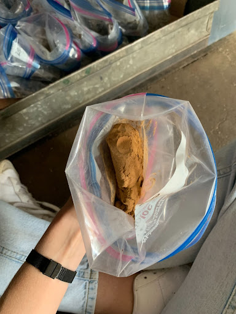
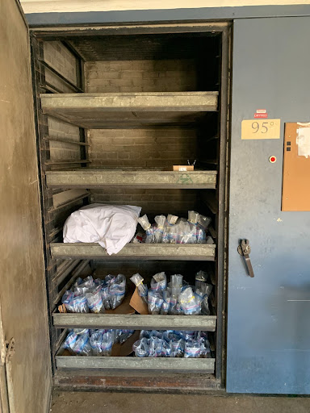

18 Permafrost Soil Processing
Last edited: 09NOV2023 NP
This is a workflow for processing field moist samples from permafrost-affected soils, including weighing, drying, sieving, and prepping for pH, EC, LPSA, lab analysis, and LOI. Brain dumps are included in notes callouts. This was written for use on the St. Paul campus of UMN.
18.1 Materials
- Soil samples in ziploc bags or Whirlpaks
- Cardboard sheets
- Wall dryers/ovens at 95º or 140ºF
- Scale
- Scoopula
- Falcon tubes (1 per sample)
- 2x3” baggies (we use 4mm white block bags from ULINE)
- 30mL Nalgenes, if preparing for LPSA
18.2 Procedure
- Weigh wet samples in the field (field wet weight).
- Dry at 35ºC (95ºF), moving wet samples to 55-60ºC (130-140ºF) dryers as needed. Transfer wet samples in the hot dryer for up to 8 hours at a time.
- To protect the baggies, put them on pieces of cardboard when they’re in the dryers; this also makes it easier to transport the samples between the hot and warm dryers. Cardboard can be found in the cardboard dumpster on the south end of the Seed Barn. Rip boxes into trays that would fit on the dryer racks.
- Fold the top of the bags down halfway so there is a wider opening (see left photo on next page). If there is a lot of sample around the top of the bag, don’t fold it at all because the sample will fall out as it dries.
- September is a busy time for the dryers, so the ones in Crops Research were very full. Use the Seed Barn dryers instead.
- It’s helpful to put the samples on different trays according to moisture level as you are opening them, meaning separate the very wet ones from the less wet ones. That way, you have an idea of which trays need to go to the hot dryers and which can be taken out first.
- I checked on the samples every day, both to move them to the hot dryers and mix up the samples. They will dry faster if you move the sample around; squish it from the outside of the bag, pull the bag away from it, pull the sample out from the corners of the bag, etc.
- It’s more manageable to take the dry samples out on a rolling basis, so consider checking on the more dry trays every couple days. Remove any dry ones and weigh them, so you’re not stuck doing several hundred on the same day.
- As mentioned above, the drying process will go a lot faster if you move the wet samples to the hot dryers (140ºF) daily. I started by leaving them in there for 4 hours at a time to make sure the bags wouldn’t bake, but 8 hours is fine. The cardboard and bags will be slightly warm when you remove them, but not hot enough to burn.
- In Sep/Oct2023, we left them in the 140ºF dryer for the entire drying process and the bags were fine.
- A couple last logistical notes: to make your life better, turn the fans off before you open the dryer doors. The buttons are under the stairs on the first floor of the seed barn (to the right of dryer #3). Remember to turn the fans back on! Also make sure that the dryer doors are fully latched, as some have tricky handles.


Here’s what the samples should look like in the dryer. As you can see, they are all on cardboard trays and the bags are folded open. Baggies do not need to be spaced out, but make sure they are open at the top so air can get in.
- Weigh samples when dry. The sample can stay in the bag(s) if you know the average bag weight. If you’re sieving right after weighing the samples, weigh them in a weigh boat.
- Pulverize and sieve samples to 2mm. Save coarse fragments (> 2mm) in a 2x3” or 4x6” bag if there is a significant amount. We want to keep any gravel and rocks. While sieving, consider preparing the samples for pH, EC, and LPSA. After taking the < 2mm weight of the sample and putting it back in the bag, measure out the necessary amounts into pre-labeled containers.
- pH/EC: 10g of sample (fill to 10mL line) in a falcon tube
- Analysis at lab (RAL, Agvise): minimum of 5g in a 2x3” bag. Note that organic soils weigh significantly less and 5g will not fit in a small bag - just fill the bag.
- LPSA: 1 pinch of sample (use pinch measuring spoon w/ red tape on handle) in a 30mL Nalgene
- Once prepared for all analyses, the reserve sample should be stored in a large tote.
Consider printing out labels to tape on the bottles so you don’t have to write them individually on tape. I made a spreadsheet and wrote each label twice (one for pH/EC and one for LPSA). Prep pH and EC in the same falcon tube.
18.2.0.1 Loss on Ignition (notes)
The following section contains notes and thoughts for LOI on permafrost samples. In 2022 and 2023, we have not done LOI.
- [directions on cleaning and drying crucibles? Is that only done after LOI. Can we just use the crucibles as they are, assuming they’re clean?]
- On the analytical balance, weigh a clean, dry, empty ceramic crucible. Record the weight. Do not tare the scale after placing the crucible on it.
- Measure 5g of air dry sample into the crucible. Somewhere between 4.8-5.2g of sample is good. Record the weight of your crucible and soil sample together.
- Oven dry samples for 24 hours.
- The muffle furnace can hold 12 samples at a time. Consider preparing samples and putting them in the oven on the morning of day 1. On day 2, once 24 hours have passed, remove them from the oven, weigh them, and put them in the muffle furnace. Remove them before you leave on day 2.
- [maybe add notes about preparing and oven drying 24 samples and working a longer day on day 2 to have time to put 2 rounds of 12 samples through the muffle furnace?]
- [is it important that samples go from the oven to muffle furnace quickly? Can they sit out for a few hours/a day in between or will they reabsorb moisture?]
- On the analytical balance, weigh your crucible and sample once again (dry).
- Transfer crucibles and samples into the muffle furnace @ 450/500ºC for 4.5-5 hours.
- Weigh the crucible and sample again on the analytical balance. Samples will be very hot upon removal from the muffle furnace. Use tongs to remove.
- [do the samples get added back to the bag after LOI? Kept separately?]
- Rinse, clean, and oven dry the crucibles for the next round.